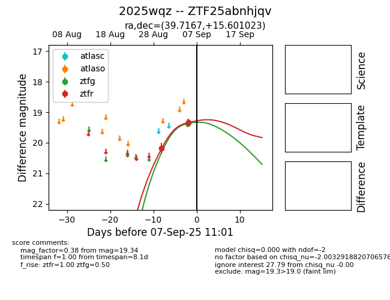

FINK: ZTF25abnhjqv
Lasair: ZTF25abnhjqv
ALeRCE: ZTF25abnhjqv
TNS: 2025wqz
YSE: 2025wqz
ZTF25abnhjqv (ztf,fink)
2025wqz (tns,yse)
equatorial (ra, dec) = (39.7167,+15.60102)
galactic (l, b) = (157.5143,-39.94907)

last atlasc=19.21, atlaso=19.28, ztfg=19.28, ztfr=19.08
2 atlasc, 3 atlaso, 5 ztfg, 5 ztfr detections